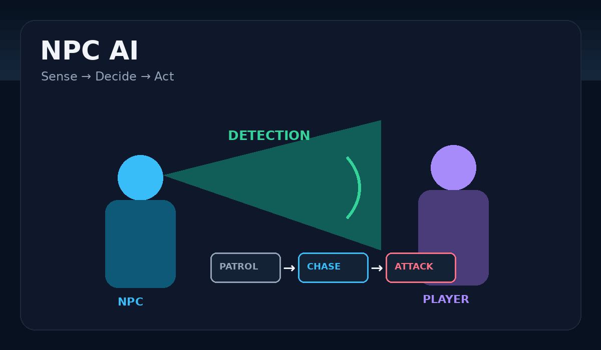
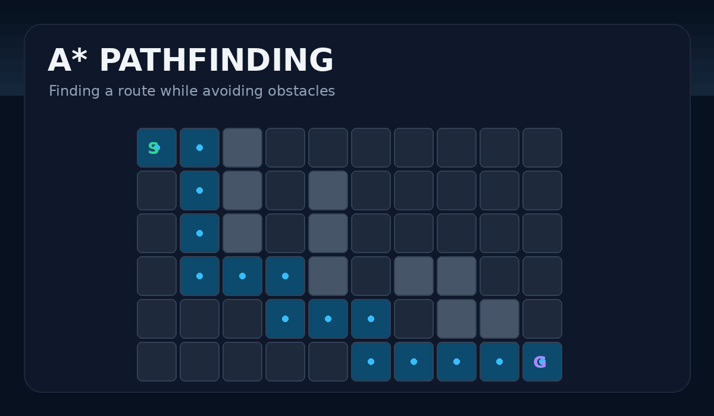
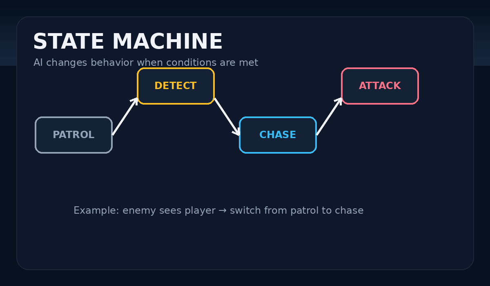
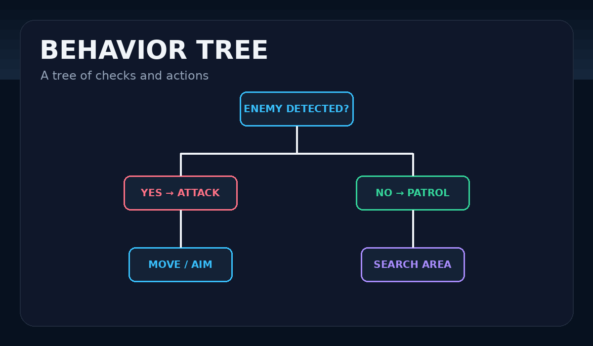
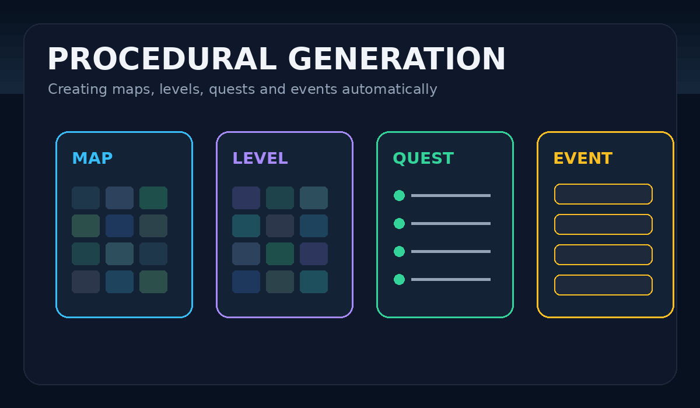
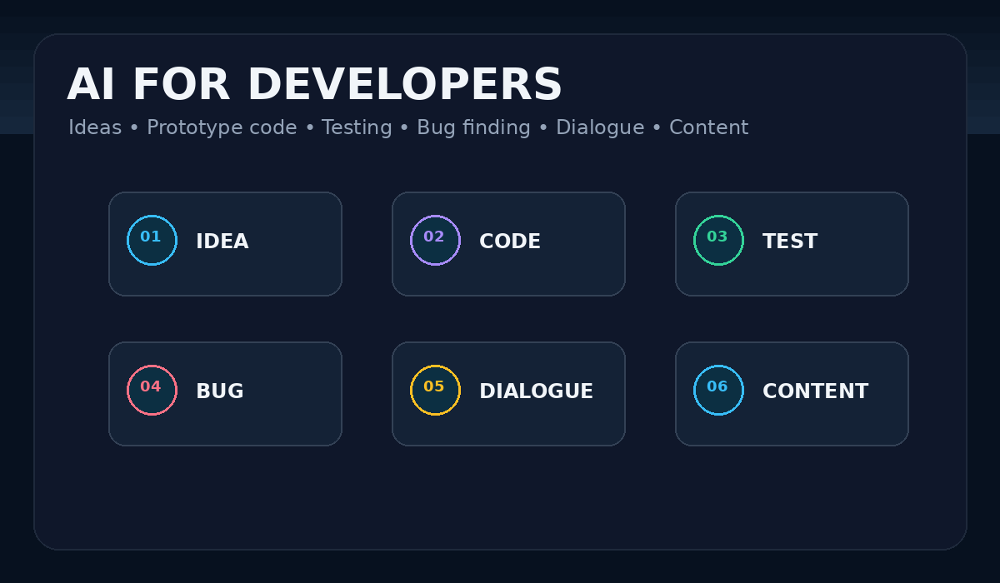
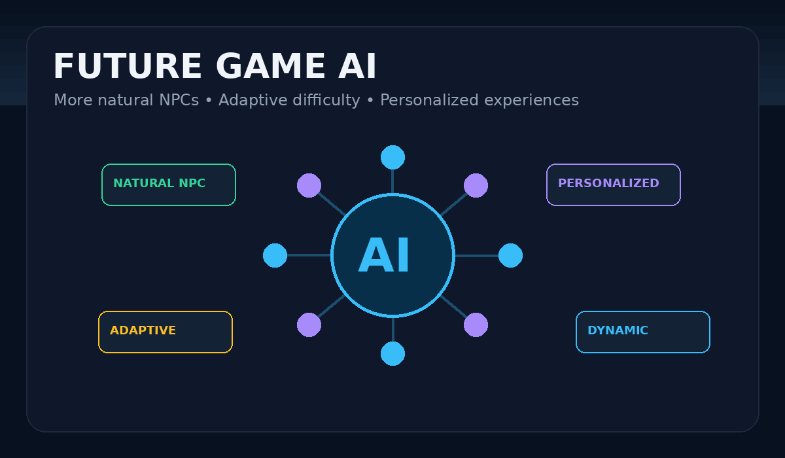

Artificial Intelligence
ปัญญาประดิษฐ์กับโลกของเกม
เว็บไซต์นี้อธิบายการนำปัญญาประดิษฐ์ หรือ AI มาใช้ในเกม ตั้งแต่การควบคุมตัวละคร NPC การตัดสินใจ การหาเส้นทาง ไปจนถึงการช่วยนักพัฒนาออกแบบเกม โดยเน้นเนื้อหาที่เข้าใจง่ายและมีตัวอย่างประกอบ
Section 01
1. ความหมายของ AI ในเกม
AI ในเกมคือระบบที่ทำให้ตัวละครหรือระบบภายในเกมสามารถตอบสนอง ตัดสินใจ และปรับพฤติกรรมตามสถานการณ์ได้ โดยไม่จำเป็นต้องมีผู้เล่นควบคุมทุกอย่าง
รับรู้สถานการณ์
ตรวจจับผู้เล่น ศัตรู สิ่งกีดขวาง หรือเหตุการณ์ภายในเกม
ประมวลผล
ตรวจสอบข้อมูลและเงื่อนไขก่อนเลือกการกระทำ
ตัดสินใจ
เลือกว่าจะเดิน โจมตี ป้องกัน หลบหนี หรือทำภารกิจ
ตอบสนอง
ดำเนินการและเปลี่ยนพฤติกรรมตามสถานการณ์ที่เกิดขึ้น
Section 02
2. AI ของตัวละคร NPC
NPC หรือ Non-Player Character คือตัวละครที่ไม่ได้ถูกควบคุมโดยผู้เล่นโดยตรง เช่น ศัตรู เพื่อนร่วมทีม หรือชาวเมือง AI ช่วยให้ NPC มองเห็นผู้เล่น ตอบสนองต่อเหตุการณ์ และเลือกการกระทำได้

เมื่อ NPC ตรวจพบผู้เล่น ระบบ AI อาจเปลี่ยนจากการเดินลาดตระเวนไปเป็นการไล่ตามและโจมตีผู้เล่น
Section 03
3. การหาเส้นทาง (Pathfinding)
Pathfinding คือวิธีที่ AI เลือกเส้นทางจากจุดหนึ่งไปยังอีกจุดหนึ่ง ช่วยให้ตัวละครหลีกเลี่ยงสิ่งกีดขวางและติดตามเป้าหมายได้

A* เป็นตัวอย่างอัลกอริทึมที่ใช้สำหรับค้นหาเส้นทางและพบได้บ่อยในการพัฒนาเกม
Section 04
4. การตัดสินใจของ AI
เกมสามารถใช้ระบบเพื่อกำหนดพฤติกรรมของ AI เช่น State Machine และ Behavior Tree ซึ่งช่วยให้ AI เลือกว่าจะโจมตี หลบหนี ป้องกัน หรือทำภารกิจตามเงื่อนไขที่เกิดขึ้น


Section 05
5. การสร้างเนื้อหาแบบอัตโนมัติ
AI หรือ Procedural Generation สามารถช่วยสร้างแผนที่ ด่าน ภารกิจ หรือเหตุการณ์แบบสุ่ม ทำให้เกมมีความหลากหลายและเล่นซ้ำได้มากขึ้น

Section 06
6. AI ช่วยในการพัฒนาเกม
AI สามารถช่วยนักพัฒนาในงานหลายขั้นตอนของการสร้างเกมได้

- สร้างแนวคิดและช่วยออกแบบระบบเกม
- ช่วยเขียนโค้ดต้นแบบ
- ช่วยทดสอบเกม
- ช่วยค้นหาบั๊ก
- ช่วยสร้างบทสนทนา
- ช่วยออกแบบเนื้อหา
Section 07
7. ประโยชน์และข้อจำกัดของ AI ในเกม
ประโยชน์
- ทำให้เกมสมจริงขึ้น
- ลดงานบางส่วนของนักพัฒนา
- เพิ่มความหลากหลายของเกม
- ช่วยให้ NPC ตอบสนองต่อสถานการณ์ได้
ข้อจำกัด
- AI อาจตัดสินใจผิด
- อาจใช้ทรัพยากรของระบบสูง
- อาจทำให้ประสบการณ์ผู้เล่นไม่สมดุล
- ต้องออกแบบและทดสอบอย่างเหมาะสม
Section 08
8. อนาคตของ AI ในวงการเกม

Future Game AI
ในอนาคต AI อาจช่วยสร้าง NPC ที่ตอบสนองต่อผู้เล่นได้เป็นธรรมชาติมากขึ้น ปรับระดับความยากตามความสามารถของผู้เล่น และสร้างประสบการณ์ที่แตกต่างกันสำหรับผู้เล่นแต่ละคน
สรุป
AI เป็นเทคโนโลยีสำคัญที่ช่วยทำให้เกมมีความฉลาด สมจริง และมีความหลากหลายมากขึ้น ทั้งในด้านการควบคุมตัวละคร การสร้างเนื้อหา และการช่วยพัฒนาเกม แต่ยังต้องออกแบบอย่างเหมาะสมเพื่อให้เกมสนุก ยุติธรรม และไม่สร้างปัญหาให้กับผู้เล่น
กลับด้านบน